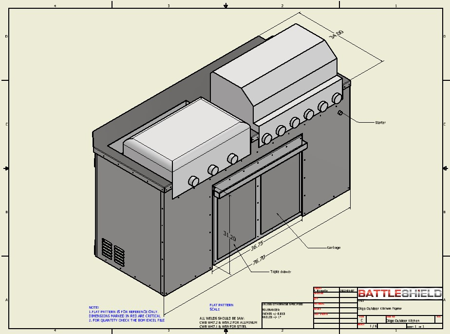

Custom Stainless Kitchen
To start this project, I gathered all requiered dimensions from the BBQs and the porch. I then talked at lenght with the customer to determine his needs and features he wanted to include. This mainly container of counter space, trash and recycling bin and a spice rack. I then proceeded to create multiple itiration of the product to account for as many factors as possible. The biggest limitation was the size restriction and the lack of counter space.
Once I was closer to the final design, I also involved the shop workers to address any possible issues with laser cutting, bending, weldeding or assembely.
Throughout this project, I faced multiple unforeseen issues that required adjustments. Such as tolerences that were too big and some too small. Fortunatly, a limited amount of parts had to be recut to make them fit.
Finaly, communication with the customer was a very important part of the project. On multiple occasion the customer changed certain dimension and features. I also regularly kept him updated on the build progress. The customer was very satisfied with the final product!
The kitchen is composed of two parts: the cart and the counter.
The cart can be pulled out of its nook to serve as movable counter space. It also allows acces to the gas lines in the back.
The counter supports the gas and charcoal BBQs. With an aluminum frame and full stainless steel shell it is heat resistant all while looking amazing. It has ventilation on the side to help reduce tempurture build up.